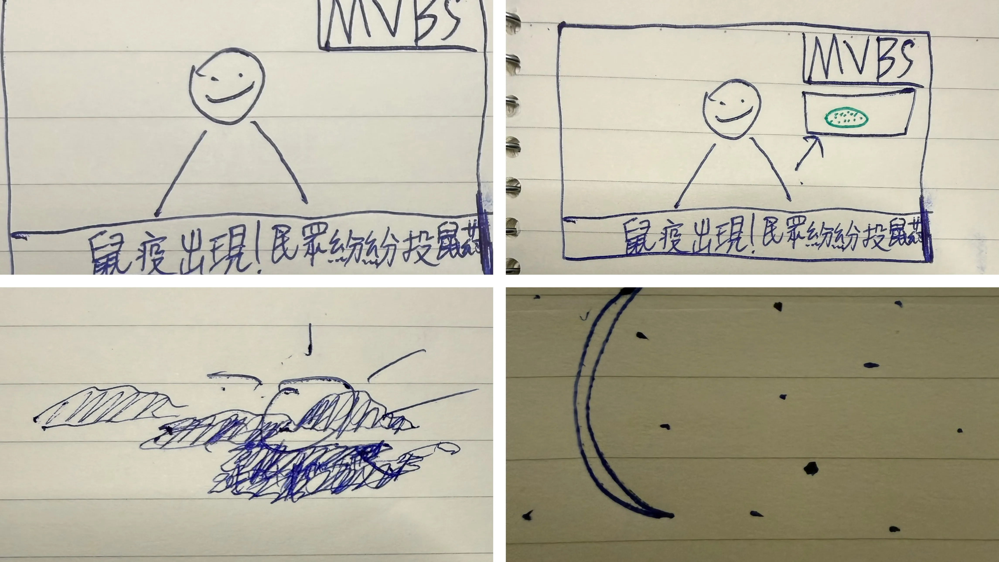
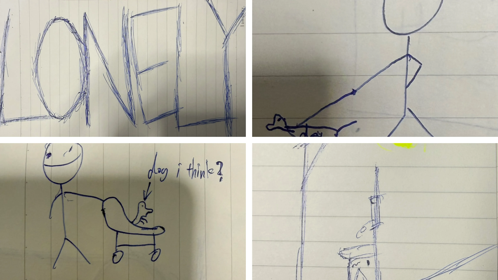
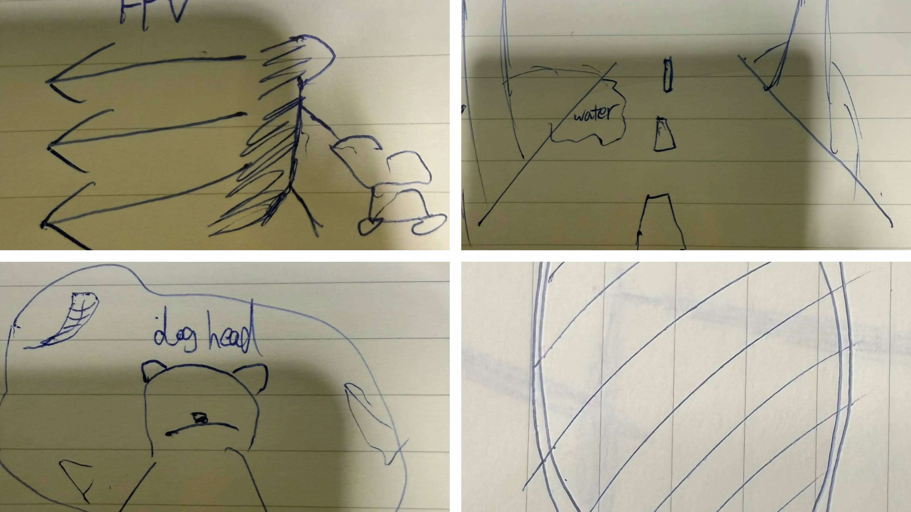
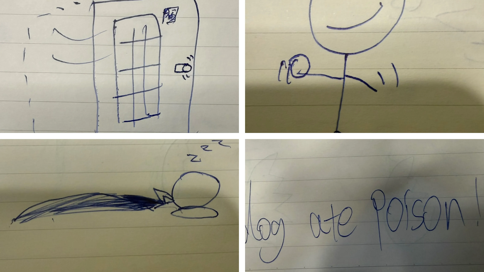
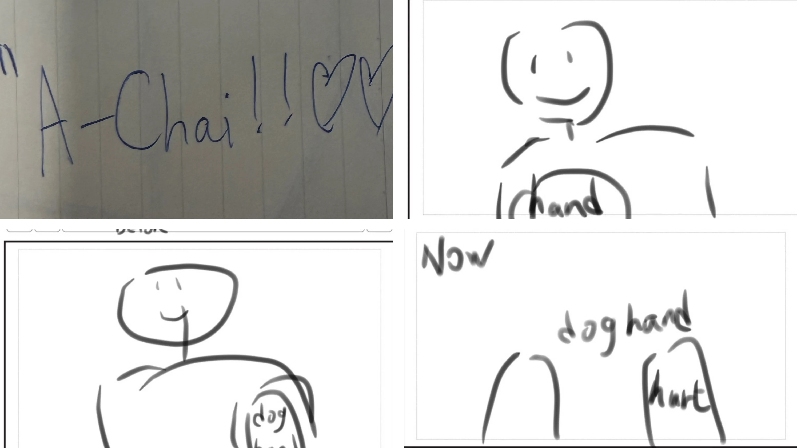
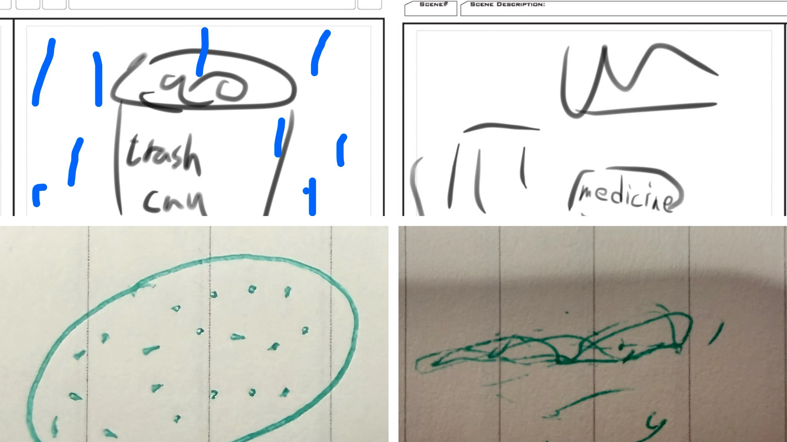
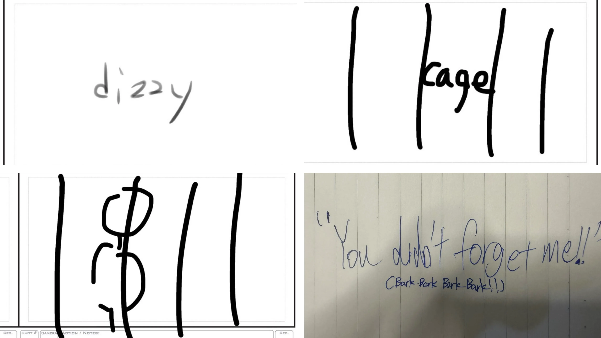
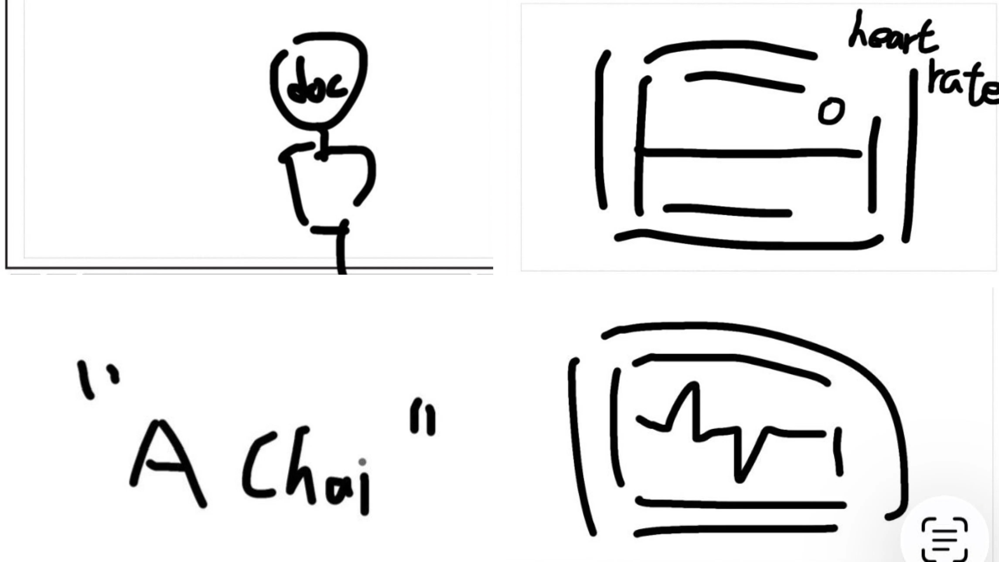

Will Chu
Will Chu
Production page
Production Journal
We went to around 信义路 to film our video, the reason why is because there are many restaurants around, I think the stray dogs will go to there to find the food ( at least smell foods). The hardest thing is the time controlling, because we don’t have enough time to edit. When we edit, we do it at home. But different teammates have different times that they can use. So sometimes we will have problems discussing or separating jobs. How I did my camera settings to make the screen? I just used some IOS settings Change it to the movie mode first, Then make the quality to 4k, then find the correct position to have a good combo with the light. Because when we were filming we only had sunlight, so I decided to change the position. I chose the slant angle, because this angle can make the sunlight shinier then Kailyn can stand in the middle to a bit right in the screen to make more contrast We changed a lot from our story board, our original idea were dog die at the hospitol, but we can't shoot in the hospitol so we changed it
Our dog video V1
Animatic of the dog video
Story Boards








Script
Original script
夜復一夜地過去。 陽光照耀著我髒兮兮的皮毛。 路燈在夜裡帶給我溫暖。 一切都靜悄悄的。 好孤獨。 你拋棄我了嗎？ 走在街上，當我看到有主人陪伴的狗狗時， 我甚至不敢抬起頭。 即使我不會說話， 你依然能感受到我的嫉妒。 我曾經擁有一個家。 我的生活何時變成這樣了？ 我看著水中的倒影， 想起了以前家裡的鏡子。 我的記憶力不太好， 但我仍然記得我的名字： 「阿柴」。 我曾經很擅長握手， 和轉圈。 主人總是笑著摸摸我的頭。 我也最喜歡躺在他的腳邊睡覺。 那時候的我， 以為幸福永遠不會消失。 但那些快樂的回憶漸漸模糊， 我回到了現實。 我看著爪子上疼痛的傷口。 現在，我的爪子什麼也做不了。 我甚至找不到食物。 我好餓。 雨慢慢地下了起來。 冰冷的水滴落在我的身上。 沒有人願意靠近我。 大家只是摀著鼻子， 快速地從我身旁走過。 “……為什麼這食物聞起來這麼濃？” 飽食完後，我慢慢地倒在了地上。 “好想睡覺……” 再睜開眼時， 眼前已經不是熟悉的街景， 而是一個破舊的籠子。 人們好像稱這裡為收容所。 這裡有好多和我一樣的狗。 有些不停地吠叫， 有些只是安靜地縮在角落。 每天都有人來看我們。 可是，大部分的人只是看了一眼， 就轉身離開。 我努力搖著尾巴。 即使身體很痛， 我還是想被帶回家。 終於有一天。 那個熟悉的身影出現了。 「阿柴！」 我開心地撲了上去。 原來…… 你沒有忘記我。 我也幸福地， 很快就被原本的主人接了回去。 我以為，一切都會重新開始。 直到那一天。 我看不清楚那是什麼。 只聞到一股奇怪的味道。 有人大聲地喊著： “有一隻狗吃了毒藥！” 醫生們竭盡全力搶救我。 燈光好刺眼。 耳邊充滿混亂的腳步聲。 但也許我的生命已經失去了意義。 我的心跳停止了。 只剩下一個冰冷的聲音： “嗶————” “阿柴！” 這熟悉的聲音突然把我拉了回來。 機器顯示我又活過來了。 但那也只是我的幻想。 我最後看見的， 是主人哭泣的樣子。 如果能再一次選擇， 我還是想成為你的狗。 只是這一次， 請不要再放開我了。 「照顧一隻狗需要的不僅僅是愛。 還需要責任。」 「請不要拋棄一隻 曾經信任你的狗。」